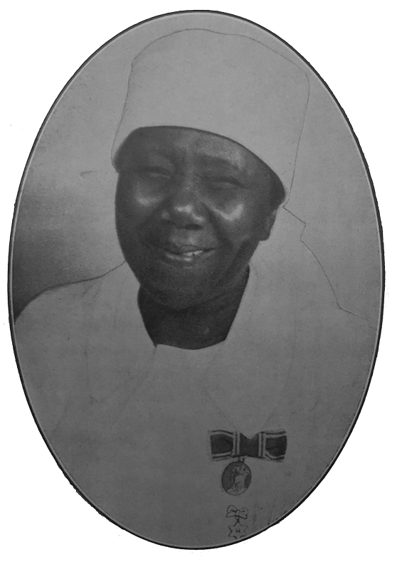

The Life-saving Work of Anna ‘Sister Nannie’ Tempo Source: South African History Online, Date: 23 August 2019 
Political And Civil Rights Leader, Cissie Gool Source: South African History Online, Date: 03 September 2019
The Unyielding Activism of Frances Baard Source: South African History Online, Date: 20 December 2019